En general, la capacidad de toma de datos posibilita que el fechado de las series sea inferior al año, apareciendo la componente estacional. No es difícil disponer de series mensuales, trimestrales, diarias o incluso con frecuencia superior.
En este tema se revisan los conocimientos del tema previo, ampliándolos a fin de contemplar la presencia de estacionalidad en las series temporales
Se mantienen las hipótesis sobre el proceso generador de datos (estacionario y ergódico) y el vector de residuos (ruido blanco).
Denotaremos por \(m\) el orden estacional.
El modelo general autorregresivo estacional de orden P, \(y_t \sim AR_m(P)\) viene definido por \[y_t=c + \phi_m y_{t-m} + \phi_{2m} y_{t-2m} + ... + \phi_{Pm} y_{t-Pm} + \varepsilon_t,\] que usando el operador retardo queda \[(1 - \phi_m L^m - \phi_{2m} L^{2m} - ... - \phi_{Pm} L^{Pm})y_t = c + \varepsilon_t.\]
El proceso es estacionario si quedan fuera del círculo de radio unidad todas las raíces del polinomio \[\Phi_P(z) = 1 - \phi_m z^m - \phi_{2m} z^{2m} - ... - \phi_{Pm} z^{Pm}.\]
Es invertible siempre.
Sobre todo,
La figura 1 muestran una simulación del proceso \(AR_{4}(2)\) definido por \(y_t = 0.7y_{t-4} - 0.7y_{t-8} + \varepsilon_t\), y la figura 2 simula el proceso \(AR_{12}(1)\) definido por \(y_t = 0.6y_{t-12} + \varepsilon_t\). En ambos casos la muestra es de tamaño 500 y \(\varepsilon_t\) se distribuye como una normal con media cero y varianza la unidad. (Todas las simulaciones se han realizado con la función arima.sim de la librería stats.)
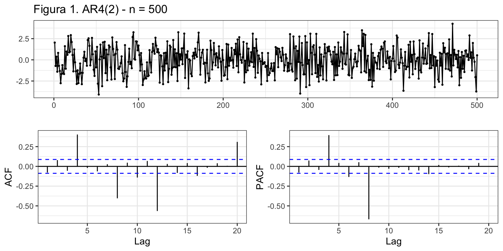
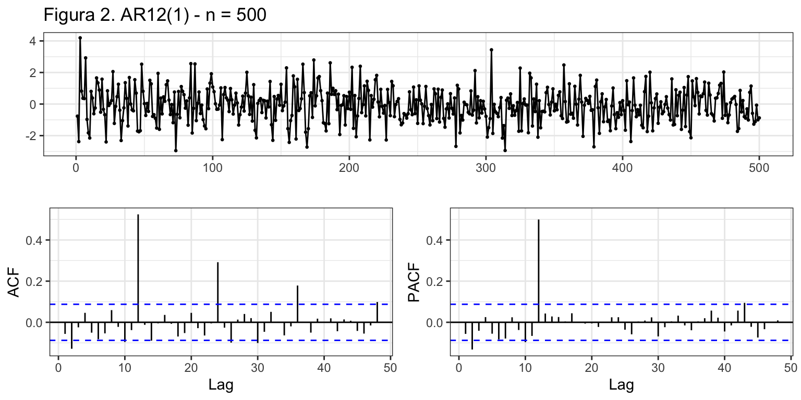
El modelo general en medias móviles estacional de orden Q, \(y_t \sim MA_m(Q)\) viene definido por \[y_t=c + \varepsilon_t + \theta_m \varepsilon_{t-m} + \theta_{2m} \varepsilon_{t-2m} + ... + \theta_{Qm} \varepsilon_{t-Qm},\] que usando el operador retardo queda \[y_t = c + (1 + \theta_m L^m + \theta_{2m} L^{2m} + ... + \theta_{Qm} L^{Qm}) \varepsilon_t.\]
El proceso es invertible si quedan fuera del círculo de radio unidad todas las raíces del polinomio \[\Theta_Q(z) = 1 + \theta_m z^m + \theta_{2m} z^{2m} + ... + \theta_{Qm} z^{Qm}.\]
Es estacionario siempre.
Sobre todo,
La figura 3 muestra una simulación del proceso \(MA_{4}(2)\) definido por \(y_t = 0.7\varepsilon_{t-4} - 0.7\varepsilon_{t-8} + \varepsilon_t\), y la figura 4 simula el proceso \(MA_{12}(1)\) definido por \(y_t = 0.6\varepsilon_{t-12} + \varepsilon_t\). En ambos casos la muestra es de tamaño 500 y \(\varepsilon_t\) se distribuye como una normal con media cero y varianza la unidad.
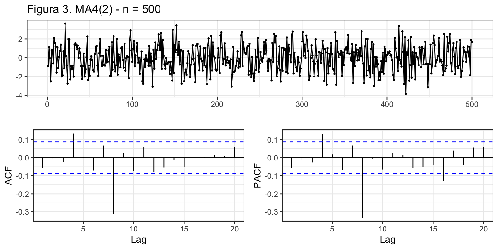
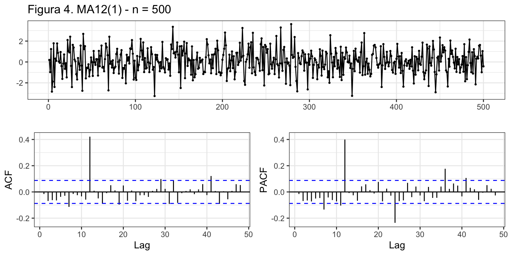
El modelo general \(y_t \sim ARMA_m(P,Q)\) viene definido por \[ y_t = c + \phi_m y_{t-m} + \phi_{2m} y_{t-2m} + ... + \phi_{Pm} y_{t-Pm} + \varepsilon_t + \theta_m \varepsilon_{t-m} + \theta_{2m} \varepsilon_{t-2m} + ... + \theta_{Qm} \varepsilon_{t-Qm},\] que usando el operador retardo queda \[(1 - \phi_m L^m - ... - \phi_{Pm} L^{Pm})y_t = c + (1 + \theta_m L^m + ... + \theta_{Qm} L^{Qm}) \varepsilon_t.\]
El proceso más simple es el \(ARMA_m(1,1)\): \(y_t = c + \phi_m y_{t-m} + \theta_m \varepsilon_{t-m} + \varepsilon_{t}.\)
El proceso es estacionario si quedan fuera del círculo de radio unidad todas las raíces del polinomio \[\Phi_P(z) = 1 - \phi_m z^m - \phi_{2m} z^{2m} - ... - \phi_{Pm} z^{Pm}.\]
El proceso es invertible si quedan fuera del círculo de radio unidad todas las raíces del polinomio \[\Theta_Q(z) = 1 + \theta_m z^m + \theta_{2m} z^{2m} + ... + \theta_{Qm} z^{Qm}.\]
Sobre todo,
La figura 5 muestra una simulación de tamaño 500 para el proceso \(ARMA_7(1,1)\) definido por \(y_t = 0.7y_{t-7} - 0.5\varepsilon_{t-7} + \varepsilon_t\).
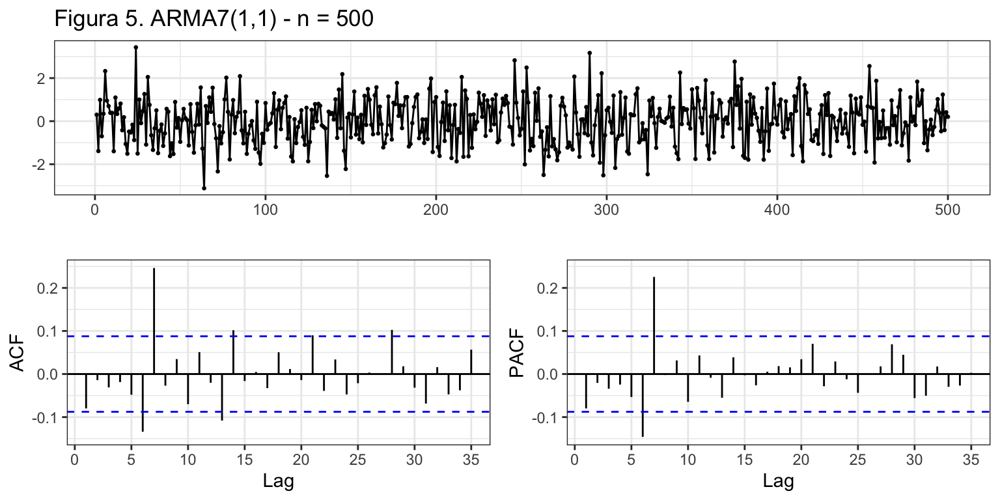
Si la serie \(y_t\) no es estacionaria en su parte estacional, pero tras diferenciarla \(D\) veces se hace estacionaria, diremos que la serie es integrada estacionalmente de orden \(D\): \(y_t \sim I_m(D)\).
Una serie \(y_t\) sigue un proceso \(ARIMA_m(P,D,Q)\) si:
Entonces, podemos escribir \(y_t \sim ARIMA_m(P,D,Q)\) como \[(1 - \phi_m L^m - ... - \phi_{Pm} L^{Pm})(1- L^m)^D y_t = c + (1 + \theta_m L^m + ... + \theta_{Qm} L^{Qm}) \varepsilon_t\]
La realidad nos muestra que la mayoría de las series con estacionalidad se ajustan a una combinación de procesos regulares y estacionales.
El proceso \(ARIMA_m(p, d, q)(P, D, Q)\) puede ser expresado de forma abreviada como \[\Phi_p(L)\Phi_P(L^m)\nabla_m^D \nabla^d y_t = c + \Theta_q(L)\Theta_Q(L^m)\varepsilon_t,\]
o menos sucintamente como \[ (1 - \phi_1 L - ... - \phi_p L^p)(1 - \phi_m L^m - ... - \phi_{Pm} L^{Pm})(1- L^m)^D(1 - L)^d y_t = \] \[c + (1 + \theta_1 L + ... + \theta_q L^q)(1 + \theta_m L^m + ... + \theta_{Qm} L^{Qm}) \varepsilon_t\]
La figura 6 muestra una simulación de tamaño 1000 para el proceso \(ARIMA_{12}(0,1,1)(0,1,1)\) definido por \((1-L)(1-L^{12})y_t = (1+ \theta_1L)(1 + \theta_{12}L^{12})\varepsilon_t\). Este proceso se denomina modelo de las aerolíneas por ser el PGD de muchas series mensuales de transporte de pasajeros, en concreto la serie mensual de pasajeros de avión. En la simulación se ha supuesto que \(\theta_1=0.7\) y \(\theta_{12}=-0.5\).
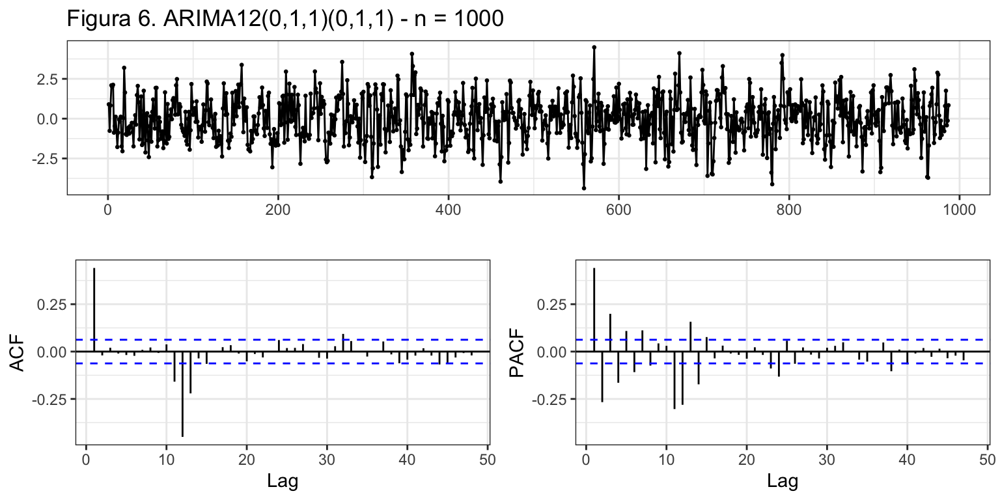
Vamos a aplicar la metodología de Box-Jenkins a la serie de nacimientos en España desde el año 2000 (véase figura 7).
nacimientos <- read.csv2("./series/nacimientos.csv", header = TRUE)
nacimientos <- ts(nacimientos["nacimientos"],
start = c(1975, 1),
freq = 12)
nacimientos <- window(nacimientos, start = 2000)
autoplot(nacimientos,
xlab = "",
ylab = "Nacimientos",
main = "Figura 7. Nacimientos en España")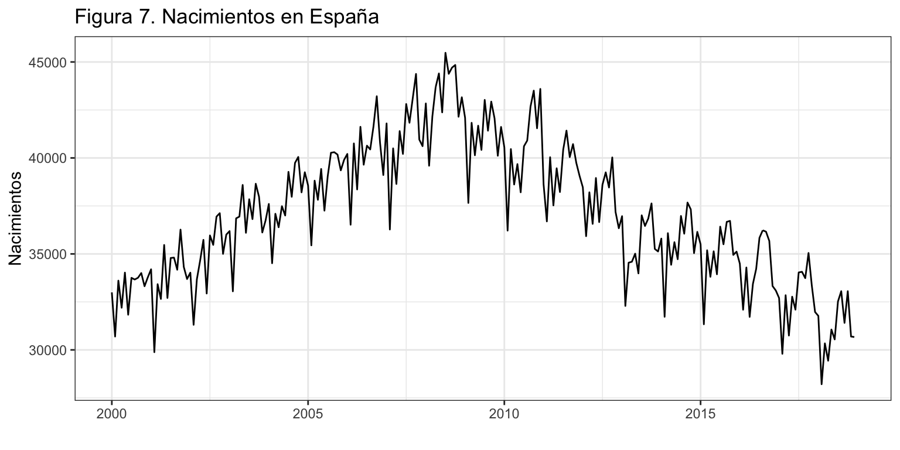
Ya vimos en el Tema 3 que para que la serie sea estacionaria y ergódica había que diferenciarla tanto regular como estacionalmente (d = D = 1). Además, trabajaremos con el logaritmo de la serie para reducir la posible heterocedasticidad y ganar en interpretabilidad. Es decir, trabajaremos con la siguiente serie transformada \[\nabla\nabla_{12}\log(nacimientos_t) \sim I(0)I_{12}(0).\]
Tras transformar la serie, vamos a identificar los valores de \(p\), \(q\), \(P\) y \(Q\) a partir de la FAC y la FACP.
ggtsdisplay(diff(diff(log(nacimientos), lag = 12)), lag = 48,
main = "Figura 8. FAC y FACP para Nacimientos")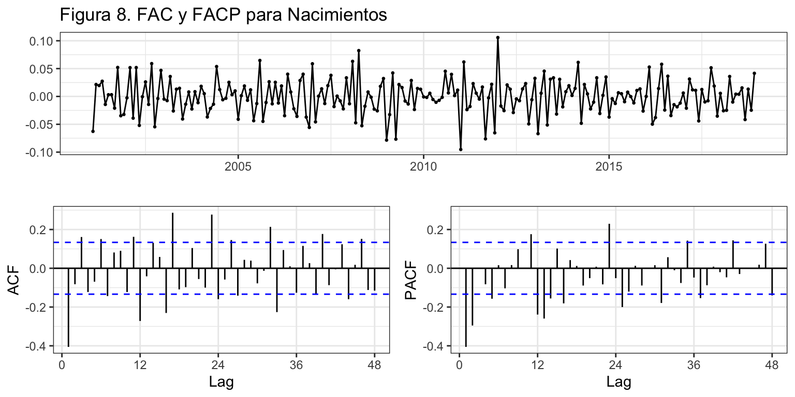
Analizando la FAC y la FACP podemos pensar que:
Pero sobre todo, observamos que no es fácil la identificación.
¿Qué nos indica auto.arima? Primero vamos a generar e incluir en el proceso de auto-identificación las variables asociadas a los efectos de intervención que hemos detectado en los temas previos. En concreto, hemos visto en el tema 1 que los meses de febrero de años bisiestos nacían más bebés, y en el tema 2 que en abril de 2008 y enero de 2011 el número de nacimientos era atípico.
Para el calculo de la variable que recoge el efecto año bisiesto usaremos la función monthdays en la librería forecast que devuelve el número de días de cada mes o trimestre de una serie.
Jan Feb Mar Apr May Jun Jul Aug Sep Oct Nov Dec
2000 31 29 31 30 31 30 31 31 30 31 30 31
2001 31 28 31 30 31 30 31 31 30 31 30 31
2002 31 28 31 30 31 30 31 31 30 31 30 31
2003 31 28 31 30 31 30 31 31 30 31 30 31
2004 31 29 31 30 31 30 31 31 30 31 30 31Bisiestos <- 1*(monthdays(nacimientos) == 29)
d0408 <- 1*(cycle(nacimientos) == 4 & trunc(time(nacimientos)) == 2008)
d0111 <- 1*(cycle(nacimientos) == 1 & trunc(time(nacimientos)) == 2011)
auto.arima(nacimientos,
d = 1,
D = 1,
lambda = 0,
xreg = cbind(Bisiestos, d0408, d0111))Series: nacimientos
Regression with ARIMA(0,1,1)(0,1,2)[12] errors
Box Cox transformation: lambda= 0
Coefficients:
ma1 sma1 sma2 Bisiestos d0408 d0111
-0.4770 -0.5944 -0.1814 0.0366 0.0580 -0.0682
s.e. 0.0651 0.0727 0.0708 0.0079 0.0164 0.0167
sigma^2 estimated as 0.0004485: log likelihood=523.34
AIC=-1032.68 AICc=-1032.14 BIC=-1009.09Indica \(ARIMA_{12}(0,1,1)(0,1,2)\), aunque no está claro si coeficiente sma2 será significativo.
Una alternativa auto.arima es la función seas de la librería seasonal. La función seas tiene como ventajas que también analiza la conveniencia de usar la transformación logarítmica, que identifica posibles efectos calendario y valores extremos, y que suele ser más parsimoniosa que auto.arima. Sus desventajas es que sólo se puede aplicar para series mensuales o trimestrales. Veamos que identificación ofrece seas:
Call:
seas(x = nacimientos)
Coefficients:
Estimate Std. Error z value Pr(>|z|)
Weekday 0.0027529 0.0002808 9.803 < 0.0000000000000002 ***
Easter[1] -0.0137391 0.0039427 -3.485 0.000493 ***
AO2010.Dec 0.0657540 0.0136111 4.831 0.0000013590 ***
MA-Nonseasonal-01 0.3437010 0.0630616 5.450 0.0000000503 ***
MA-Seasonal-12 0.7436591 0.0505710 14.705 < 0.0000000000000002 ***
---
Signif. codes: 0 '***' 0.001 '**' 0.01 '*' 0.05 '.' 0.1 ' ' 1
SEATS adj. ARIMA: (0 1 1)(0 1 1) Obs.: 228 Transform: log
AICc: 3421, BIC: 3441 QS (no seasonality in final): 0
Box-Ljung (no autocorr.): 25.19 Shapiro (normality): 0.9927
Messages generated by X-13:
Warnings:
- At least one visually significant trading day peak has been
found in one or more of the estimated spectra.En primer lugar, la función identifica el modelo de las aerolíneas para la transformación logarítmica de Nacimientos. Este resultado está en consonancia con el alcanzado con la función auto.arima. Además, identifica un valor extremo en diciembre de 2010, un efecto calendario Semana Santa (que estudiaremos en detalle en el siguiente ejemplo) y un efecto calendario días laborables del mes (que podemos entender equivalente a nuestro efecto días del mes).
Tras estos análisis alternativos, concluimos que la identificación de partida es \(ARIMA_{12}(0,1,1)(0,1,2)+AI\), \[(1 - L^{12})(1 - L)\log(nacimientos_t) = (1 + \theta_1 L)(1 + \theta_{12} L^{12} + \theta_{24} L^{24})\varepsilon_t + AI.\] donde AI recoge todas las variables de intervención.
Vamos a estimar el modelo identificado, incluidas las variables de intervención.
nac.ar1 <- Arima(nacimientos,
order = c(0, 1, 1),
seasonal = list(order = c(0, 1, 2), period = 12),
lambda = 0,
xreg = cbind(Bisiestos, d0408, d0111))
nac.ar1Series: nacimientos
Regression with ARIMA(0,1,1)(0,1,2)[12] errors
Box Cox transformation: lambda= 0
Coefficients:
ma1 sma1 sma2 Bisiestos d0408 d0111
-0.4770 -0.5944 -0.1814 0.0366 0.0580 -0.0682
s.e. 0.0651 0.0727 0.0708 0.0079 0.0164 0.0167
sigma^2 estimated as 0.0004485: log likelihood=523.34
AIC=-1032.68 AICc=-1032.14 BIC=-1009.09Ya tenemos un modelo de partida, veamos si es necesaria más intervención.
error <- residuals(nac.ar1)
sderror <- sd(error)
autoplot(error, series="Error",
colour = "black",
xlab = "",
ylab = "Error",
main = "Figura 9. Error + Intervención") +
geom_hline(yintercept = c(-3, -2,2, 3)*sderror,
colour = c("red", "green", "green", "red"),
lty = 2) +
scale_x_continuous(breaks= seq(2000, 2018, 2)) 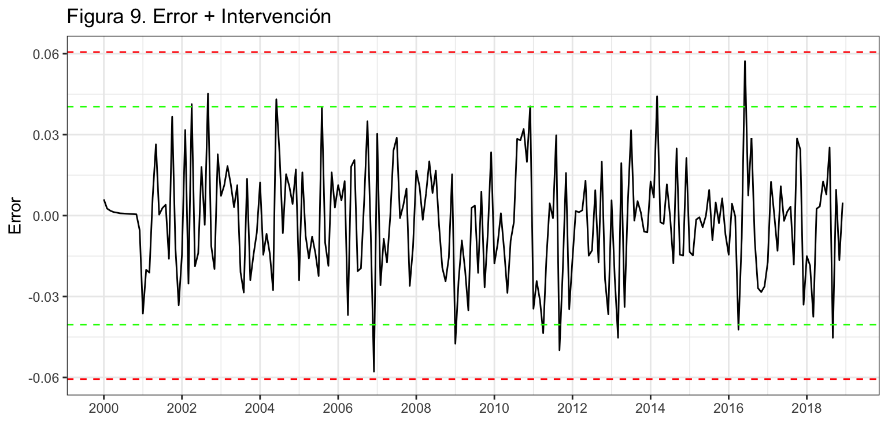
Se observa que hay dos candidatos a valores atípicos en diciembre 2006 y junio de 2016, dado que los errores asociados se acercan a las 3 desviaciones típicas. Por tanto,
d0616 <- 1*(cycle(nacimientos) == 6 & trunc(time(nacimientos)) == 2016)
d1206 <- 1*(cycle(nacimientos) == 12 & trunc(time(nacimientos)) == 2006)
nac.ar2 <- Arima(nacimientos,
order = c(0,1,1),
seasonal = list(order = c(0, 1, 2), period = 12),
lambda = 0,
xreg = cbind(Bisiestos, d1206, d0408, d0111, d0616))
nac.ar2Series: nacimientos
Regression with ARIMA(0,1,1)(0,1,2)[12] errors
Box Cox transformation: lambda= 0
Coefficients:
ma1 sma1 sma2 Bisiestos d1206 d0408 d0111 d0616
-0.4508 -0.6188 -0.1557 0.0371 -0.0421 0.0575 -0.0698 0.0322
s.e. 0.0682 0.0740 0.0724 0.0078 0.0164 0.0160 0.0163 0.0161
sigma^2 estimated as 0.0004318: log likelihood=528.54
AIC=-1039.08 AICc=-1038.2 BIC=-1008.74Ahora debemos volver a verificar si en el nuevo modelo hay valores extremos. Observamos que no hay.
error <- residuals(nac.ar2)
sderror <- sd(error)
autoplot(error, series="Error",
colour = "black",
xlab = "",
ylab = "Error",
main = "Figura 10. Error + Intervención") +
geom_hline(yintercept = c(-3, -2, 2, 3)*sderror,
colour = c("red", "green", "green", "red"),
lty = 2) +
scale_x_continuous(breaks= seq(2000, 2018, 2)) 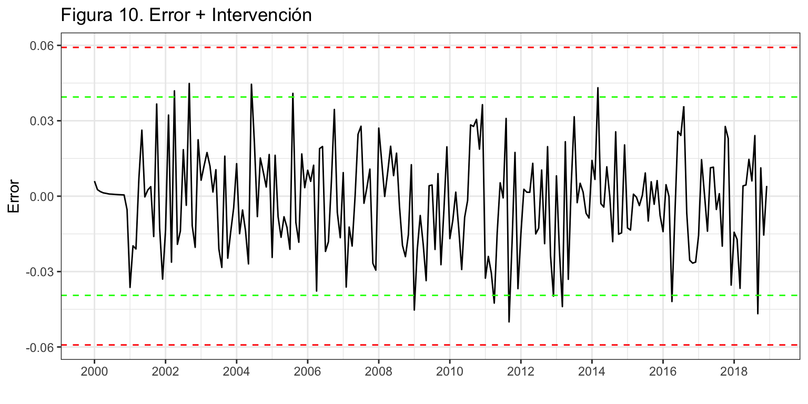
Por último, veamos si todos los coeficientes del modelo son significativos. Para ello, aplicamos la prueba de Wald y verificamos que efectivamente todos coeficientes estimados son individualmente significativos.
Wald test:
----------
Chi-squared test:
X2 = 43.6, df = 1, P(> X2) = 0.000000000039Wald test:
----------
Chi-squared test:
X2 = 69.9, df = 1, P(> X2) = 0.00000000000000011Wald test:
----------
Chi-squared test:
X2 = 4.6, df = 1, P(> X2) = 0.031Wald test:
----------
Chi-squared test:
X2 = 22.9, df = 1, P(> X2) = 0.0000017Wald test:
----------
Chi-squared test:
X2 = 6.6, df = 1, P(> X2) = 0.01Wald test:
----------
Chi-squared test:
X2 = 13.0, df = 1, P(> X2) = 0.00032Wald test:
----------
Chi-squared test:
X2 = 18.5, df = 1, P(> X2) = 0.000017Wald test:
----------
Chi-squared test:
X2 = 4.0, df = 1, P(> X2) = 0.045No se puede contrastar si el residuo tiene media cero, pero el error medio es -77, muy bajo en comparación con el valor medio de la serie.
Además, tenemos las diferentes medidas de bondad del ajuste. En media nos equivocamos en 744 bebés (RMSE) y el error porcentual medio es del 1.6%.
ME RMSE MAE MPE MAPE MASE ACF1
Training set -77.25 744.23 594.09 -0.23 1.59 0.42 0.02
Incorrelación, Homocedasticidad y Normalidad
Veamos ahora si el residuo es ruido blanco.
ggAcf(error, lag = 36, ylim = c(-0.3, 0.3),
main = "Figura 11. FAC del error del modelo")
Box.test(error, lag = 2,type = "Ljung-Box")
Box-Ljung test
data: error
X-squared = 0.38638, df = 2, p-value = 0.8243
Box-Ljung test
data: error
X-squared = 82.954, df = 24, p-value = 0.00000002045
Box-Ljung test
data: error^2
X-squared = 0.99161, df = 2, p-value = 0.6091
Box-Ljung test
data: error^2
X-squared = 18.773, df = 24, p-value = 0.764
Jarque Bera Test
data: error
X-squared = 1.2803, df = 2, p-value = 0.5272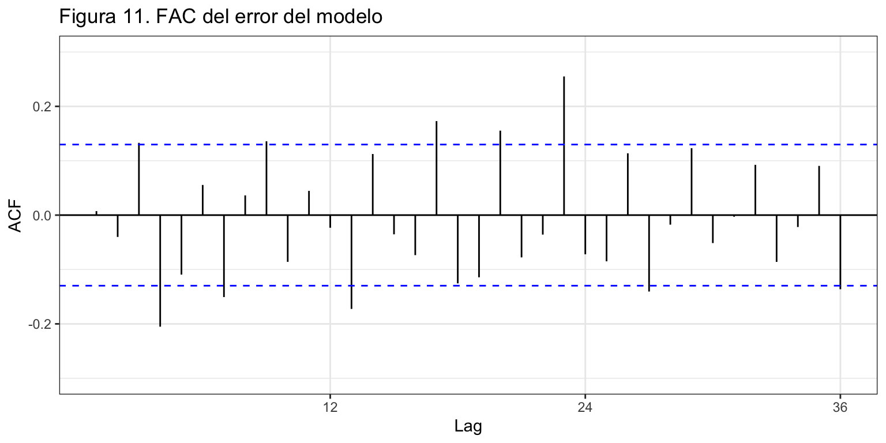
Claramente hay autocorrelaciones significativas, pero en retardos no relevantes (véase figura 11). El error muestra ser homocedástico y seguir una distribución normal.
El modelo teórico es \(log(nacimientos) \sim ARIMA_{12}(0, 1, 1)(0, 1, 2) + AI\), \[(1 - L^{12})(1 - L)\log(nacimientos_t) = (1 + \theta_1 L)(1 + \theta_{12} L^{12} + + \theta_{24} L^{24})\varepsilon_t + AI.\] Si sustituimos \((1 - L^{12})\log(nacimientos_t)\) por \(TVAnacimientos_t\), la tasa de variación anual de los nacimientos, y desarrollamos queda \[TVAnacimientos_t = TVAnacimientos_{t-1} + \theta_1 \varepsilon_{t-1} + \theta_{12} \varepsilon_{t-12} + \theta_{24} \varepsilon_{t-24} + \ldots + \varepsilon_{t}+\] \[+\gamma_1 \cdot Bisiestos_t+\gamma_2 \cdot d1206_t + \gamma_3 \cdot d0408_t +\gamma_4 \cdot d0111_t+ \gamma_5 \cdot d0616_t.\]
Finalmente, el modelo estimado es, \[\widehat{TVAnacimientos}_t = TVAnacimientos_{t-1} - 0.45\varepsilon_{t-1} - 0.62\varepsilon_{t-12} - 0.16\varepsilon_{t-24} + \ldots + \] \[0.037\cdot DiasMes_t - 0.042\cdot d1206_t + 0.057\cdot d0408_t - 0.07\cdot d0111_t + 0.032\cdot d0616_t.\]
En cada mes la tasa de variación anual de los nacimientos es la misma que la del mes pasado (\(\widehat{TVAnacimientos}_t = TVAnacimientos_{t-1}\)). Además, si la tasa de variación anual del mes previo fue anómala (\(\varepsilon_{t-1}\) diferente de cero) o la tasa de variación anual de hace uno o dos años fue anómala (\(\varepsilon_{t-12}\) o \(\varepsilon_{t-24}\) diferente de cero), corregimos la previsión para compensar (términos en medias móviles).
Respecto de la intervención, los febreros bisiestos nacen un 3.7% más de bebés. Por alguna razón, en diciembre de 2006 hubo un 4.2% menos de nacimientos de lo esperado; en abril de 2008 hubo un 5.7% más de nacimientos de lo esperado; en enero de 2011 hubo un 7% menos de nacimientos de lo esperado; y en junio de 2016 hubo un 3.2% más de nacimientos de lo esperado.
Una vez dado por válido el modelo podemos pasar a realizar predicciones para los próximos años. Hay que tener en cuenta que hay cinco variables de intervención, una de ellas un efecto calendario (Bisiestos), para las que debemos indicar qué valores tomarán en el periodo de predicción. Vamos a fijar el horizonte de predicción en cuatro años y mostrar los resultado numérica (solo para el primer año) y gráficamente (figura 11b).
pbi <- 1*(monthdays(ts(0, start = 2019, end = c(2022, 12), freq = 12)) == 29)
pnac.ar2 <- forecast(nac.ar2,
h = 48,
xreg = cbind(pbi, rep(0,48), rep(0,48), rep(0,48), rep(0,48)),
level = 95)
pnac.ar2 Point Forecast Lo 95 Hi 95
Jan 2019 30410.27 29196.57 31674.42
Feb 2019 27090.46 25860.44 28378.99
Mar 2019 29688.74 28196.48 31259.98
Apr 2019 28501.90 26943.93 30149.95
May 2019 29944.51 28186.59 31812.07
Jun 2019 29189.28 27365.94 31134.11
Jul 2019 31137.75 29082.90 33337.79
Aug 2019 31221.00 29056.71 33546.50
Sep 2019 30833.75 28598.85 33243.30
Oct 2019 31632.40 29244.28 34215.53
Nov 2019 29698.46 27370.69 32224.20
Dec 2019 29682.05 27273.36 32303.47autoplot(pnac.ar2,
ylab = 'Nacimientos',
main = 'Figura 11b. Nacimientos (2000-2018) y predicción (2019-2022)') +
scale_x_continuous(breaks= seq(2000, 2022, 4)) 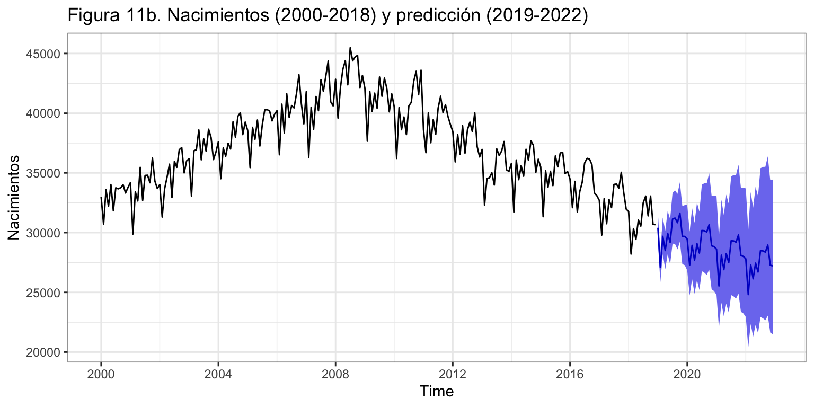
En la descriptiva del tema 1 vimos que uno de los principales determinantes del número de nacimientos era el número de días del mes. Así, se observaba que febrero era el mes con menos nacimientos y que en un mes de 31 días nacían mas bebés que en los meses de 30 días contiguos. Este hecho sugiere que la serie Nacimientos medios al día, resultante de dividir la serie Nacimientos al mes entre el número de días de cada mes, tendrá un comportamiento más suave que la serie original y, por ello, será más fácil ajustarla a un PGD y ofrecerá predicciones más precisas.
Vamos a estimar para Nacimientos medios al mes el mismo modelo identificado previamente, quitando el regresor bisiestos que ya no sería necesario, pero dejando todos los demás.
nac.ar3 <- Arima(nacimientos/monthdays(nacimientos),
order = c(0,1,1),
seasonal = list(order = c(0, 1, 2), period = 12),
lambda = 0,
xreg = cbind(d1206, d0408, d0111, d0616))
nac.ar3Series: nacimientos/monthdays(nacimientos)
Regression with ARIMA(0,1,1)(0,1,2)[12] errors
Box Cox transformation: lambda= 0
Coefficients:
ma1 sma1 sma2 d1206 d0408 d0111 d0616
-0.4508 -0.6200 -0.1547 -0.0421 0.0572 -0.0696 0.0321
s.e. 0.0683 0.0738 0.0722 0.0164 0.0159 0.0162 0.0161
sigma^2 estimated as 0.0004261: log likelihood=528.51
AIC=-1041.01 AICc=-1040.32 BIC=-1014.05Se observa que los coeficientes del nuevo modelo no difieren notablemente de los coeficientes del modelo previo.
ME RMSE MAE MPE MAPE MASE ACF1
Training set -2.5 24.33 19.44 -0.23 1.59 0.43 0.02La exclusión del número de días del mes no mejora la calidad de ajuste del modelo sobre Nacimientos medios al día porque su efecto ya estaba recogido en la variable Bisiestos del modelo sobre Nacimientos. Pensemos que febrero es el único mes que puede tener un número diferente de días. Sin embargo, siempre que esté justificado, es conveniente probar si la inclusión en el modelo del número de días del mes o el número de días laborables, o el número de domingos u otros efectos calendario, más allá de los febreros bisiestos, mejora su ajuste y capacidad predictiva. Extenderemos estas ideas en el siguiente ejemplo.
Vamos a aplicar la metodología de Box-Jenkins a la serie mensual de producción de chocolate en Australia desde enero de 1958 hasta diciembre de 1994, 444 meses.
chocolate <- read.csv2("./series/Chocolate.csv", header = TRUE)
chocolate <- ts(chocolate, start = 1958, freq = 12)
autoplot(chocolate,
xlab = "",
ylab = "Toneladas",
main = "Figura 12. Producción de Chocolate (Australia)")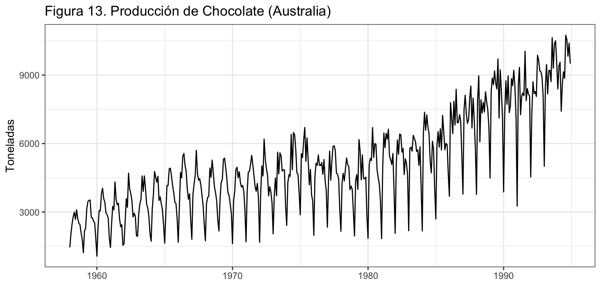
La producción de chocolate presenta una tendencia creciente, especialmente desde los años 80 del siglo pasado, una marcada componente estacional (donde la máxima producción se da en el invierno austral, meses de mayo a agosto, y la menor producción en enero), combinados en un esquema multiplicativo. Trabajaremos con el logaritmo de la serie para linealizar las componentes y reducir la posible heterocedasticidad.
La figura 13 muestra que solo la doble diferenciación regular y estacional consigue que la transformación logarítmica de Chocolate sea estacionaria y ergódica.
ggAcf(log(chocolate), lag = 48,
xlab = "", ylab = "d = D = 0", main = "Figura 13. FAC")
ggAcf(diff(log(chocolate)), lag = 48,
xlab = "", ylab = "d = 1 - D = 0", main = "")
ggAcf(diff(log(chocolate), lag = 12), lag = 48,
xlab = "", ylab = "d = 0 - D = 1", main = "")
ggAcf(diff(diff(log(chocolate), lag = 48, lag = 12)),
xlab = "", ylab = "d = 1 - D = 1", main = "")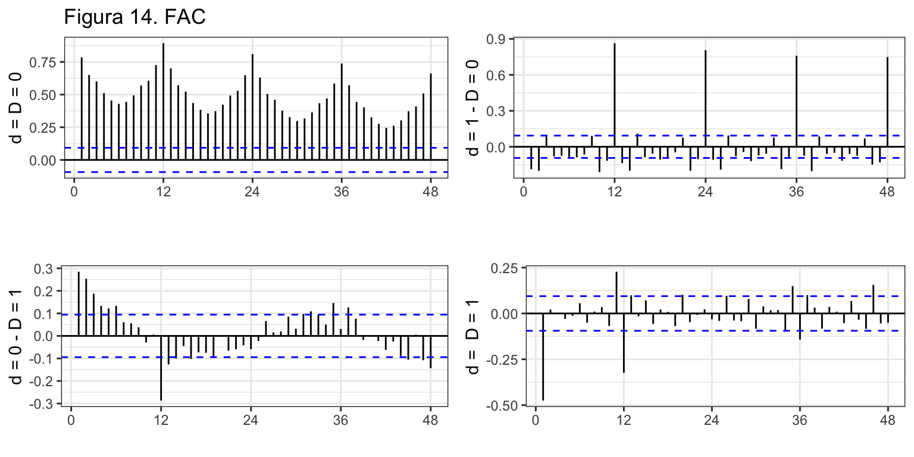
Podemos concluir que \(d = 1\) y \(D = 1\) o \(\log(chocolate_t) \sim I(1)I_{12}(1)\).
Tras transformar la serie, vamos a identificar los valores de \(p\), \(q\), \(P\) y \(Q\) a partir de FAC y FACP de la serie doblemente diferenciada.
ggtsdisplay(diff(diff(log(chocolate), lag = 12)), lag = 48,
main = "Figura 14. FAC y FACP para Chocolate (log)")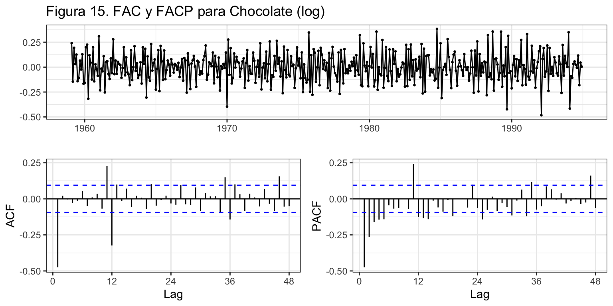
Analizando la FAC y FACP (figura 14), tenemos que:
Parece ser un ARIMA(0, 1, 1)(1, 1, 1).
¿Qué nos indica auto.arima? Para ayudar a esta función lo máximo posible vamos a definir una variable de intervención que pueden ser relevante:
bizdays. Un inconveniente de esta función, es que su valor depende de los festivos de cada país. Por ejemplo, en EE.UU es festivo el Día de Acción de Gracias (cuarto jueves de noviembre), pero no en España; y aquí es festivo el día de la Constitución (6 de diciembre), que no lo es en EE.UU. Por proximidad cultural, histórica y política, usaremos el calendario de Londres para Australia. (R permite crear tu propio calendario de festivos y existen otras librerías que extienden las opciones de bizdays.) Jan Feb Mar Apr May Jun Jul Aug Sep Oct Nov Dec
1958 23 20 21 20 21 21 23 20 22 23 20 21
1959 22 20 20 22 20 22 23 20 22 22 21 22
1960 21 21 23 19 22 21 21 22 22 21 22 21
1961 22 20 22 19 22 22 21 22 21 22 22 19
1962 23 20 22 19 23 20 22 22 20 23 22 19Vamos a crear esta variable y a incluirla en la auto-identificación.
# Efecto año días laborables
DiasLaborables <- bizdays(chocolate, FinCenter = "London")
auto.arima(chocolate, d = 1, D = 1,
lambda = 0,
xreg = DiasLaborables)Series: chocolate
Regression with ARIMA(1,1,1)(0,1,2)[12] errors
Box Cox transformation: lambda= 0
Coefficients:
ar1 ma1 sma1 sma2 xreg
0.3032 -0.9078 -0.6174 -0.0922 0.0339
s.e. 0.0619 0.0326 0.0501 0.0487 0.0040
sigma^2 estimated as 0.009433: log likelihood=391.34
AIC=-770.68 AICc=-770.48 BIC=-746.28Indica \(ARIMA_{12}(1,1,1)(0,1,2)\), donde el parámetro \(\theta_{24}\) no está claro si es significativo. Además, hay un efecto días laborables significativo.
Por último, la función seas (también con un poco de ayuda) identifica un proceso \(ARIMA_{12}(1,1,1)(1,1,0)\), con un efecto Semana Santa (de ocho días) un efecto día de la semana y un efecto año bisiesto, que se asemejan al efecto días laborables.
Call:
seas(x = diff(diff(log(chocolate), lag = 48)))
Coefficients:
Estimate Std. Error z value Pr(>|z|)
Leap Year -0.013553 0.034408 -0.394 0.693663
Mon -0.054958 0.020647 -2.662 0.007773 **
Tue 0.008228 0.020563 0.400 0.689054
Wed 0.028560 0.020551 1.390 0.164626
Thu 0.061383 0.020564 2.985 0.002837 **
Fri 0.041958 0.020572 2.040 0.041389 *
Sat -0.063009 0.020743 -3.038 0.002384 **
Easter[8] -0.105476 0.043025 -2.451 0.014226 *
AR-Nonseasonal-01 0.303304 0.062508 4.852 0.00000122 ***
AR-Seasonal-12 0.189741 0.052079 3.643 0.000269 ***
MA-Nonseasonal-01 0.868474 0.032868 26.423 < 0.0000000000000002 ***
---
Signif. codes: 0 '***' 0.001 '**' 0.01 '*' 0.05 '.' 0.1 ' ' 1
SEATS adj. ARIMA: (1 0 1)(1 0 0) Obs.: 395 Transform: none
AICc: -476.6, BIC: -429.7 QS (no seasonality in final): 0
Box-Ljung (no autocorr.): 19.47 Shapiro (normality): 0.986 ***
Messages generated by X-13:
Warnings:
- Automatic transformation selection cannot be done on a series
with zero or negative values.
- Series should not be a candidate for seasonal adjustment
because the spectrum of the prior adjusted series (Table B1)
has no visually significant seasonal peaks.Vamos a considerar como modelo de partida el identificado con auto.arima excluyendo el parámetro no significativo.
choco.ar1 <- Arima(chocolate, order=c(1, 1, 1),
seasonal = list(order = c(0, 1, 1), period = 12),
lambda = 0,
xreg = DiasLaborables)
choco.ar1Series: chocolate
Regression with ARIMA(1,1,1)(0,1,1)[12] errors
Box Cox transformation: lambda= 0
Coefficients:
ar1 ma1 sma1 xreg
0.2844 -0.8972 -0.6718 0.0339
s.e. 0.0620 0.0333 0.0462 0.0038
sigma^2 estimated as 0.009501: log likelihood=389.55
AIC=-769.1 AICc=-768.96 BIC=-748.77Ya tenemos un modelo de partida, veamos si es necesaria más intervención.
error <- residuals(choco.ar1)
sderror <- sd(error)
autoplot(error, series="Error",
colour = "black",
xlab = "",
ylab = "Error",
main = "Figura 15. Error + Intervención") +
geom_hline(yintercept = c(-3, -2, 2, 3)*sderror,
colour = c("red", "green", "green", "red"),
lty = 2) +
scale_x_continuous(breaks= seq(1958, 1994, 2)) 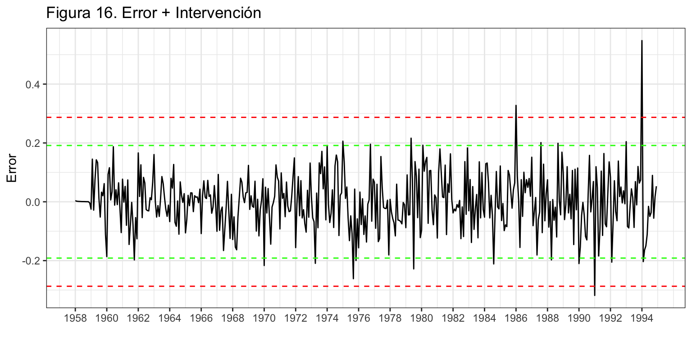
Se observan tres valores claramente atípicos en enero de 1986, 1991 y 1994. Además, hay otro candidatos a valor extremo, por superar las 2.5 desviaciones típicas, en septiembre de 1975. Por tanto,
d0975 <- 1*(cycle(chocolate) == 9 & trunc(time(chocolate)) == 1975)
d0186 <- 1*(cycle(chocolate) == 1 & trunc(time(chocolate)) == 1986)
d0191 <- 1*(cycle(chocolate) == 1 & trunc(time(chocolate)) == 1991)
d0194 <- 1*(cycle(chocolate) == 1 & trunc(time(chocolate)) == 1994)
choco.ar2 <- Arima(chocolate, order=c(1, 1, 1),
seasonal = list(order = c(0, 1, 1), period = 12),
lambda = 0,
xreg = cbind(DiasLaborables, d0975, d0186, d0191, d0194))
choco.ar2Series: chocolate
Regression with ARIMA(1,1,1)(0,1,1)[12] errors
Box Cox transformation: lambda= 0
Coefficients:
ar1 ma1 sma1 DiasLaborables d0975 d0186 d0191
0.3052 -0.8889 -0.6778 0.0363 -0.1630 0.1291 -0.3385
s.e. 0.0646 0.0355 0.0413 0.0035 0.0753 0.0755 0.0769
d0194
0.5128
s.e. 0.0838
sigma^2 estimated as 0.008197: log likelihood=423.4
AIC=-828.8 AICc=-828.37 BIC=-792.2Ahora debemos volver a verificar si en el nuevo modelo hay valores extremos. Observamos que no hay.
error <- residuals(choco.ar2)
sderror <- sd(error)
autoplot(error, series="Error",
colour = "black",
xlab = "",
ylab = "Error",
main = "Figura 16. Error + Intervención") +
geom_hline(yintercept = c(-3, -2, 2, 3)*sderror,
colour = c("red", "green", "green", "red"),
lty = 2) +
scale_x_continuous(breaks= seq(1958, 1994, 2)) 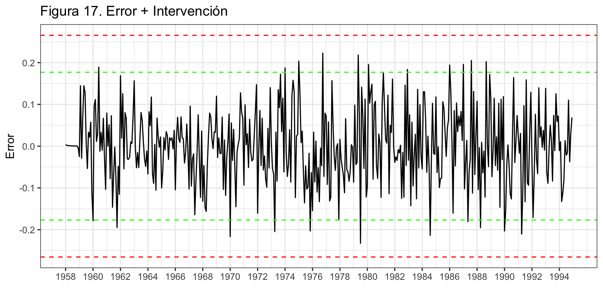
Por último, veamos si todos los coeficientes del modelo son significativos. Aunque uno de ellos (enero 1986) no lo es al 5%, si lo es al 10% así que optamos por dejarlo.for(i in 1:length(coef(choco.ar2))) {
wt <- wald.test(b = coef(choco.ar2),
Sigma = vcov(choco.ar2),
Terms = i)
cat("\nCoeficiente: ", names(coef(choco.ar2))[i], "\tvalor de p: ",
formatC(wt$result$chi2[3], digits = 4, format = "f"))
}
Coeficiente: ar1 valor de p: 0.0000
Coeficiente: ma1 valor de p: 0.0000
Coeficiente: sma1 valor de p: 0.0000
Coeficiente: DiasLaborables valor de p: 0.0000
Coeficiente: d0975 valor de p: 0.0303
Coeficiente: d0186 valor de p: 0.0874
Coeficiente: d0191 valor de p: 0.0000
Coeficiente: d0194 valor de p: 0.0000Analizando los criterios de bondad de ajuste se tiene que: el error medio 3 es prácticamente cero por lo que no parece que haya sesgo en las predicciones; en media nos equivocamos en 488 toneladas (RMSE) y el error porcentual medio es 7%, razonable.
ME RMSE MAE MPE MAPE MASE ACF1
Training set 3 488.05 360.71 -0.33 6.99 0.69 -0.05
Incorrelación, Homocedasticidad y Normalidad
Veamos ahora si el residuo es ruido blanco.
ggAcf(error, lag = 36, main = "Figura 17. FAC del error del modelo")
Box.test(error, lag = 2,type = "Ljung-Box")
Box-Ljung test
data: error
X-squared = 3.8081, df = 2, p-value = 0.149
Box-Ljung test
data: error
X-squared = 27.763, df = 24, p-value = 0.2701
Box-Ljung test
data: error^2
X-squared = 0.077789, df = 2, p-value = 0.9619
Box-Ljung test
data: error^2
X-squared = 29.658, df = 24, p-value = 0.1964
Jarque Bera Test
data: error
X-squared = 1.0924, df = 2, p-value = 0.5791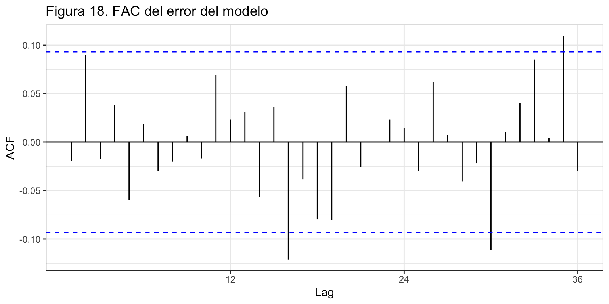
El error muestra ser incorrelado, homocedástico y seguir una distribución normal.
El modelo teórico es \(log(chocolate) \sim ARIMA_{12}(1, 1, 1)(0, 1, 1) + AI\), \[(1 - \phi_1 L)(1 - L^{12})(1 - L)\log(chocolate_t) = (1 + \theta_1 L)(1 + \theta_{12} L^{12})\varepsilon_t + AI.\] Si sustituimos \((1 - L^{12})\log(chocolate_t)\) por \(TVAchocolate_t\), desarrollamos el modelo y sustituimos los parámetros por sus estimaciones, queda \[\widehat{TVAchocolate}_t = TVAchocolate_{t-1} + 0.31(TVAchocolate_{t-1} - TVAchocolate_{t-2}) \] \[- 0.89\varepsilon_{t-1} - 0.68\varepsilon_{t-12} + 0.60\varepsilon_{t-13}\] \[+0.036\cdot DiasLaborables - 0.16\cdot d0975 + 0.13 \cdot d0186-0.34 \cdot d0191 + 0.51\cdot d0194.\] Por tanto:
Una vez dado por válido el modelo podemos pasar a realizar predicciones para los próximos años. Hay que tener en cuenta que hay una variables de intervención de efecto calendario (Días laborables), para la que debemos indicar qué valores tomará en el periodo de predicción. Vamos a fijar el horizonte de predicción en cuatro años (1995 a 1998).
dummy <- ts(rep(0, 48), start = 1995, frequency = 12)
pdl <- bizdays(dummy, FinCenter = "London")
pchoco.ar2 <- forecast(choco.ar2,
h = 48,
xreg = cbind(pdl, rep(0,48), rep(0,48), rep(0,48), rep(0,48)),
level = 95)
autoplot(pchoco.ar2,
xlab = "",
ylab = 'Toneladas',
main = 'Figura 17. Chocolate (1958-1994) y predicción (1995-1998)') +
scale_x_continuous(breaks= seq(1958, 1998, 4)) 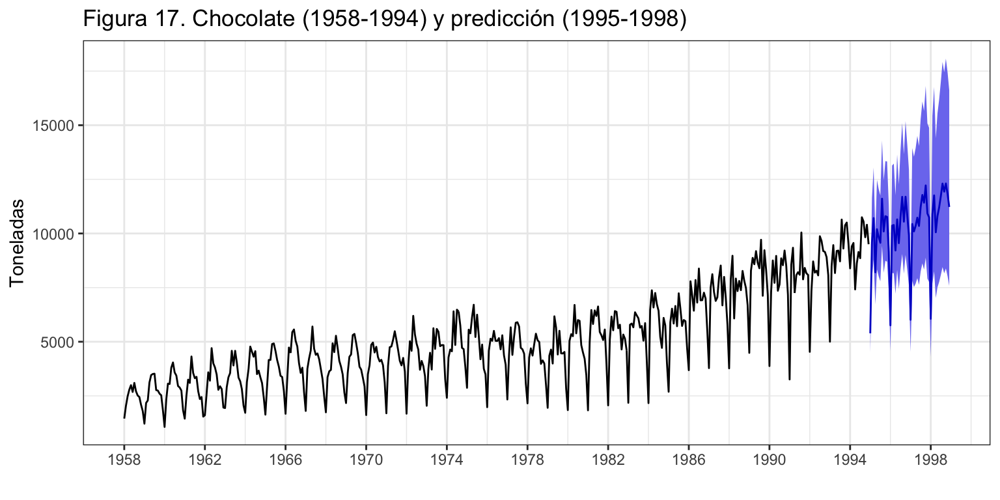
Veamos una comparativa, para los dos ejemplos vistos, entre los resultados obtenidos con ARIMA y con Alisado exponencial
Nacimientos (log):
MAPE ARIMA: \(1.6\%\) - ARIMA(0,1,1)(0,1,2) + AI
MAPE ETS : \(1.8\%\) - ets(A,Ad,A)
Chocolate (log):
MAPE ARIMA: \(7.0\%\) - ARIMA(1,1,1)(0,1,1) + AI
MAPE ETS : \(8.1\%\) - ets(A,A,A)
Los modelos ARIMA al permitir la inclusión de intervención han mejorado los resultados de los modelos de alisado. En el caso de Chocolate, la mejora en la calidad del ajuste es superior al punto porcentual.
Vamos a aplicar los conceptos vistos de validación cruzada para la serie de Nacimientos. Además, vamos a mejorar ligeramente la rutina vista en el Tema 2 para incluir la intervención.
Recordemos que la serie va de enero de 2000 hasta diciembre de 2018, es un proceso \(ARIMA_{12}(0,1,1)(0,1,2)\) con intervención en febreros bisiestos y otros meses identificados como atípicos.
Asumimos que se precisan diez años para hacer una buena estimación, \(k = 120\), y fijaremos el horizonte temporal en un año, \(h = 12\) meses.
La siguiente rutina permite obtener el MAPE para previsiones con un horizonte temporal desde un mes hasta doce meses para los modelos de Alisado exponencial y Arima con intervención.
k <- 120 #Minimo numero de datos para estimar
h <- 12 #Horizonte de las predicicones
T <- length(nacimientos) #Longitud serie
s<-T - k - h #Total de estimaciones
mapeArima <- matrix(NA, s, h)
mapeAlisado <- matrix(NA, s, h)
X <- cbind(Bisiestos, d1206, d0408, d0111, d0616)
for (i in 0:s) {
train.set <- subset(nacimientos, start = i + 1, end = i + k)
test.set <- subset(nacimientos, start = i + k + 1, end = i + k + h)
X.train <- X[(i + 1):(i + k),]
hay <- colSums(X.train)
X.train <- X.train[, hay>0]
X.test <- X[(i + k + 1):(i + k + h),]
X.test <- X.test[, hay>0]
if (length(X.train) > 0) {
fit <- Arima(train.set,
order = c(0, 1, 1),
seasonal = list(order = c(0, 1, 2), period = 12),
lambda = 0,
xreg=X.train)} else {
fit <- Arima(train.set,
order = c(0, 1, 1),
seasonal = list(order = c(0, 1, 2), period = 12),
lambda = 0)
}
if (length(X.train) > 0) fcast <- forecast(fit, h = h, xreg = X.test) else
fcast <- forecast(fit, h = h)
mapeArima[i,] <- 100*abs(test.set - fcast$mean)/test.set
fit <- ets(train.set, lambda = 0, model = "AAA", damped = TRUE)
fcast<-forecast(fit, h = h)
mapeAlisado[i,] <- 100*abs(test.set - fcast$mean)/test.set
}
errorArima <- colMeans(mapeArima)
errorArima [1] 1.838284 2.129670 2.348195 2.653850 2.620835 2.639659 2.785968 2.891142
[9] 2.996395 3.181121 3.271705 3.414066 [1] 1.903156 2.127633 2.449670 2.833083 2.840120 2.879362 3.026254 3.101190
[9] 3.309373 3.496269 3.571194 3.808711ggplot() +
geom_line(aes(x = 1:12, y = errorArima), colour = "Blue") +
geom_line(aes(x = 1:12, y = errorAlisado), colour = "Red") +
ggtitle("Figura 18. Error de predicción (MAPE) según horizonte temporal") +
xlab("Horizonte temporal de predicción") +
ylab("%") +
scale_x_continuous(breaks= 1:12)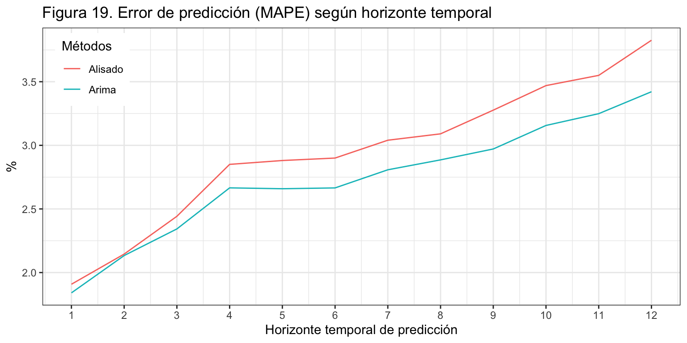
La figura 18 revela que: